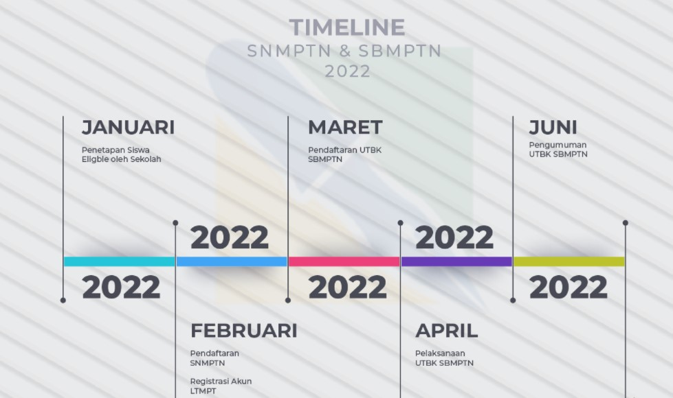
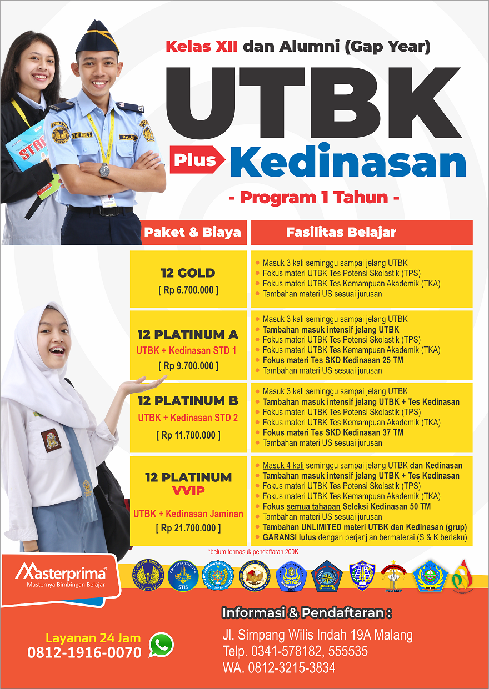

Bimbingan Belajar UTBK & Regular
UTBK SBMPTN 2022 - UTBK SBMPTN merupakan salah satu ujian tertulis dengan basis komputer untuk tes seleksi bersama ketika akan masuk ke Perguruan Tinggi Negeri (PTN). Ujian ini dilaksanakan oleh LTMPT dan berlaku untuk seluruh wilayah Indonesia.
Pendaftaran UTBK SBMPTN 2022 akan mulai dibuka pada tanggal 14 Maret sampai 15 April 2022.
Untuk mengetahui lebih lengkap terkait jadwal, syarat, cara pembuatan akun, materi hingga biaya UTBK SBMPTN 2022, maka bisa simak informasinya disini.
Jadwal Pelaksanaan UTBK SBMPTN 2022
- Proses registrasi akun LTMPT akan mulai buka pada tanggal 14 Februari sampai 17 Maret 2022.
- Tahapan sosialisasi UTBK SBMPTN 2022 sudah diselenggarakan sejak 01 Desember 2021 hingga 15 April 2022
- Sementara proses pendaftaran UTBK SBMPTN 2022 akan dilaksanakan mulai 23 Maret sampai 15 April 2022.
- UTBK Gelombang I akan mulai dilaksanakan pada tanggal 17 sampai 23 Mei 2022
- Sementara UTBK Gelombang II mulai tanggal 28 Mei hingga 03 Juni 2022
- Pengumuman untuk hasil SBMPTN pada tanggal 23 Juni 2021
- Sedangkan masa unduh sertifikat UTBK, yaitu tanggal 25 Juni - 31 Juli 2022
Syarat Pendaftaran UTBK SBMPTN 2022
- Sudah memiliki akun LTMPT yang sifatnya permanen
- eorang WNI dengan bukti memiliki NIK (Nomor Induk Kependudukan)
- Untuk siswa SMA/SMK/MA sederajat calon lulusan 2022 harus sudah mendapatkan Surat Keterangan Siswa lengkap dengan foto berwarna terbaru, stempel atau cap sekolah, serta tanda tangan dari kepala sekolah. Sedangkan peserta paket C 2022 memiliki usia maksimal 25 tahun per 1 Juli 2022.
- Siswa SMA/SMK/MA sederajat dan paket C tahun 2020/2021 harus sudah memiliki ijazah.
- Tidak lulus saat mendaftar jalur SNMPTN per tahun 2020, 2021 serta 2022
Persyaratan Tes untuk Peserta UTBK SBMPTN 2022
- Bagi peserta yang akan memilih prodi Saintek, maka dapat mengikuti tes bahasa Inggris, TPS dan TKA Saintek.
- Sementara bagi yang memilih Soshum, dapat mengikuti tes bahasa Inggris, TKA Soshum, serta bahasa Inggris.
- Namun jika ingin memilih prodi campuran alias Saintek dan Soshum, maka dapat mengikuti semua tes yang ada, meliputi TPS TKA Saintek dan Soshum, serta bahasa Inggris.
- Untuk prodi Kedokteran dan Kedokteran Gigi hanya bisa dipilih oleh peserta jurusan SMA/MA jurusan IPA saja.
- Bagi yang memilih prodi bidang Seni dan Olahraga, mak wajib mengunggah portofolio pada bidang tersebut.
- Para peserta tuna netra wajib melampirkan surat pernyataan tuna netra.
- Pastikan memiliki kesehatan memadai.
- Lakukan pembayaran biaya UTBK SBMPTN sebesar Rp200.000 ( kelompok soshum serta saintek) dan Rp300.000 (kelompok ujian campuran) ke bank BTN, BRI, BNI dan Mandiri.
Tahapan Pendaftaran UTBK SBMPTN 2022
- Lakukan registrasi akun LTMPT menggunakan NISN, NPSN serta tanggal lahir terlebih dahulu pada portal.ltmpt.ac.id.
- Selanjutnya, login dengan akun LTMPT yang sudah dibuat, kemudian pilih ‘Verifikasi dan Validasi Data’.
- Isi semua biodata, mengunggah foto terbaru berwarna serta verifikasi data pada biodata.
- Pilih menu ‘Pendaftaran UTBK SBMPTN’ dan lengkapi informasi seperti biodata, program studi yang dipilih, unggah portofolio, pilih pusat UTBK PTN, serta dapatkan slip pembayaran.
- Jika sudah, Anda dapat langsung mencetak Kartu Peserta UTBK SBMPTN masih pada portal LTMPT, yaitu melalui login dengan akun dan pilih penu ‘Pendaftaran UTBK SBMPTN’.
- Terakhir, Anda dapat mengikuti tes UTBK SBMPTN 2022 sesuai informasi tertera pada kartu peserta.
Itulah informasi mengenai seputar jadwal UTBK SBMPTN 2022 yang mesti Anda ketahui. Jika sudah menyiapkan semua syaratnya, Anda bisa langsung daftar sesuai panduan yang telah ada.
